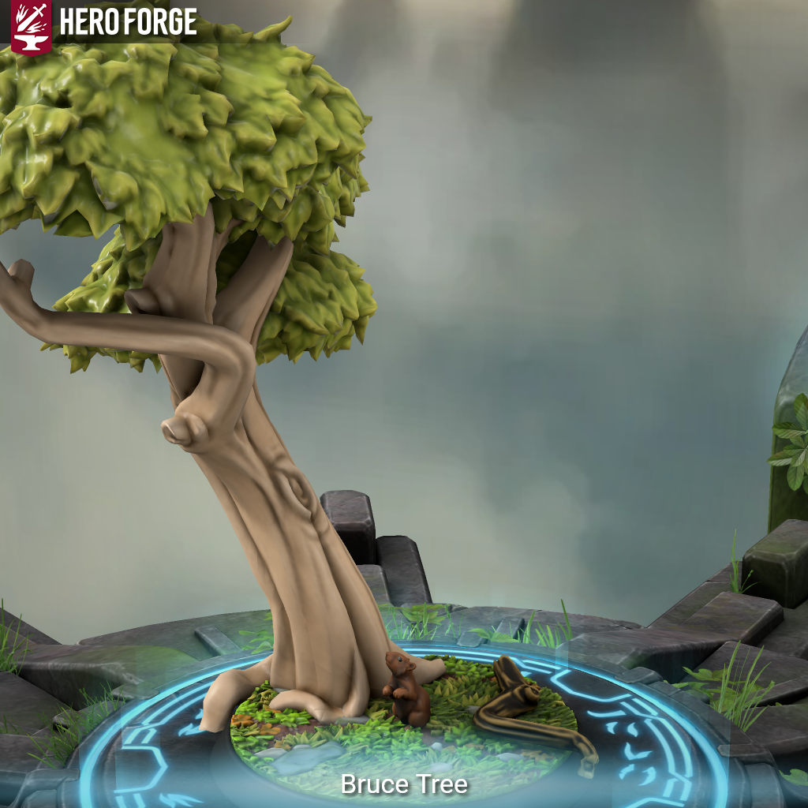

Bruce Tree. - Is This Anything?

Meet Bruce Tree.
Bruce is a chipmunk Monk who channels hyper-alert woodland instincts into dizzying martial arts and acrobatic precision. Fast, jittery, and curious to a fault, he scampers up walls, slips past blades, and punches like a tempest. His fighting style – rooted in the Way of the Drunken Master – mimics chaos but is honed by instinct, training, and unnerving, twitchy Focus.
Once a totally ordinary chipmunk on Earth, Bruce’s reality fractured one night beneath a familiar oak. He awoke somewhere strange, somewhere magical, able to speak. Disoriented but adaptable, Bruce found himself accidentally rescuing a trio of talking birds who call themselves the Blue Jay Gang. Later, his first true ally, a half-elf druid named Juniper, gave him a name, a scarf, and a purpose. “Adventuring,” she said. Bruce ran with it.
Now he wanders the world in wide-eyed wonder, hoarding snacks and shiny objects in his enchanted “cheeks of holding†and learning the rules of a world that still thinks he’s a squirrel with delusions of kung fu. But Bruce is more than that. He knows there’s a tree – his tree – that he may never see again. And while he doesn’t quite grasp why he’s here, he’ll follow the trail wherever it leads, even if it means stunning dragons with flurries of blows and dodging spells like falling leaves.